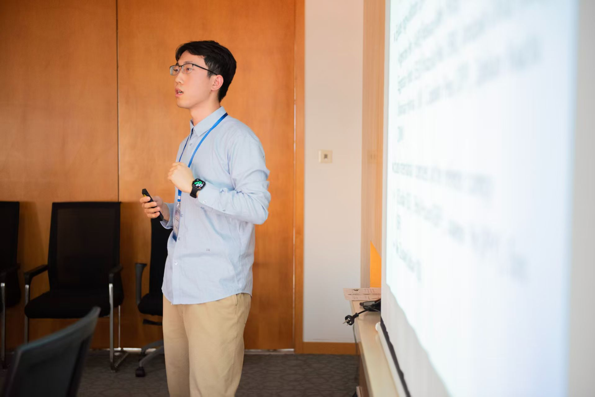

Economist · Peking University
Rui Sun
PhD Candidate in Finance, National School of Development
I am a PhD student at the National School of Development, Peking University. My research covers international capital flows, global financial integration, and international business cycles. My current work examines China's official lending and its consequences for debt sustainability and growth in recipient economies.
